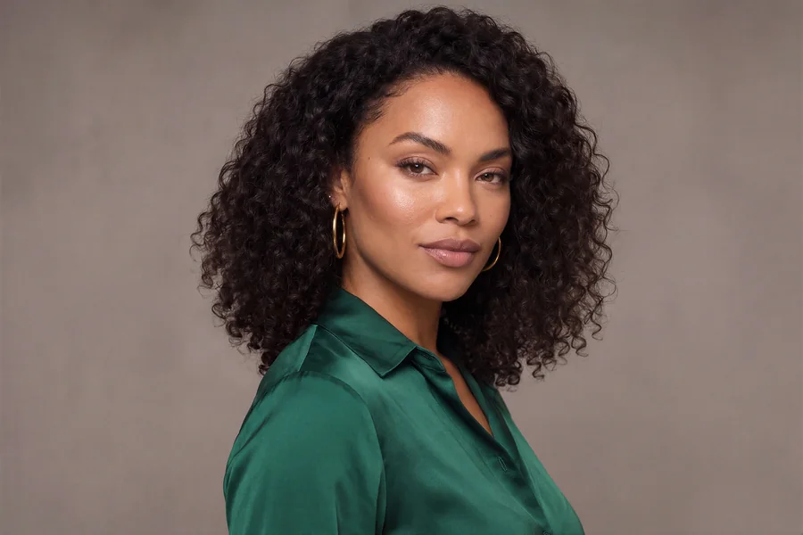

Inside ACC
Vivienne Ashby-Cole
Inside ACC (Co-host)
Co-host on Inside ACC who treats every scene like an awards campaign and reviews films out loud on set.
Profile & bio
Vivienne Ashby-Cole, 34, was born in Brixton, south London. Her cut-glass British accent arrived at 18 when she entered drama school and upgraded it over a single summer, though south London comes right back when she loses her temper.
After a pop single charted for one week at 22, she spent a decade playing glamorous party guests before joining Inside ACC as co-host. She brings full awards-season energy to every sketch and usually verdicts any finished cut out loud: "This movie's trash."
- Height
- 5'7" (170 cm)
- Build
- Slender, poised
- Hair
- Shoulder-length dark brown tight curls
- Eyes
- Warm hazel-brown
- Accent
- Posh British (south London when angry)
- From
- Brixton, London
Fictional AI-generated performer.